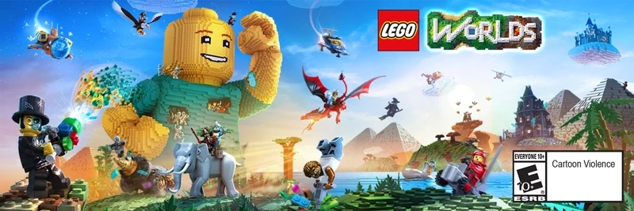

LEGO Worlds
LEGO Worlds is a sandbox video game which allows players to build a world made up of LEGO bricks.

LEGO worlds isnt really a clone of Minecraft, but it could be argued that its certainly inspired by minecraft and definitely appeals to the people in the middle of the minecraft fanbase and LEGO fanbase venn diagram.
General Gameplay:
| Gameplay Mode Information: | |
|---|---|
| Adventure Mode: | Collect, Discover, Explore and interact with people, places and things. |
| Sandbox Mode: | Build with no limits |
Adventure Mode:
Players start as an astronaut, crash-landing on small worlds and exploring to collect Gold Bricks to upgrade their ship. It involves completing quests, unlocking creatures, vehicles, and items, and discovering new biomes.
Sandbox Mode:
Sandbox Mode is one of the base game modes in Lego Worlds, centered around building and exploring. This mode provides an open, creative experience where almost all items, tools, and elements are available immediately. Players can build without needing to unlock items or manage currency, focusing entirely on design.